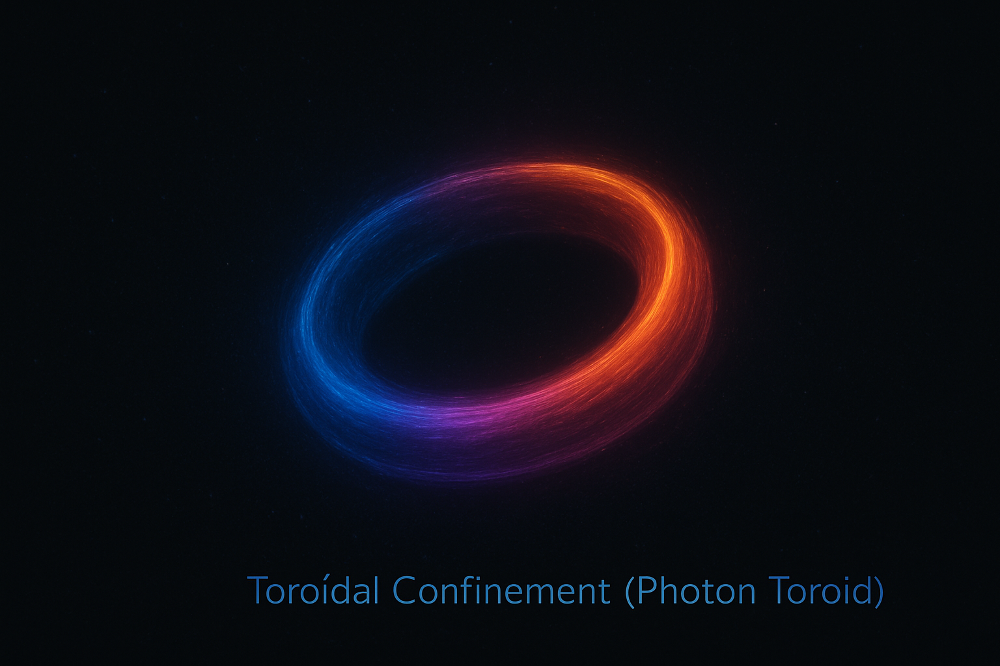

Equations and verification
Wave Confinement Theory Research Corpus
Start with the internal equation page, then move to the complete SymPy classification and Lean coverage pages. Repository files are secondary links inside those pages, so the website always has a clear return path.

From concept to computation
What a numerical diagnostic looks like.
The visual layer is kept separate from the canonical registry: illustrations explain the idea; numerical figures show computed quantities; equations and verification pages remain the source of record.

All WCT equations
All 142 IDs, family structure, canonical registry links, and paths into SymPy and Lean.
Open equation page →02 · Executable auditComplete SymPy audit
Every registered ID grouped by effective PASS, CONDITIONAL, DEFINITION, or OPEN status.
Open all 142 classifications →03 · Formal supportComplete Lean coverage
All 142 IDs accounted for, separating proofs, partial support, definitions, counterexamples, TODOs, and unmapped obligations.
Open Lean coverage →04 · Semantic graphResearch Command Center
Definitions, assumptions, derivations, equations, code, predictions, experiments, evidence, falsifiers, and chronology.
Open research graph ↗05 · Machine-readableCorpus JSON
All 142 compiled objects with effective status, verification kind, assumptions, Lean mappings, empirical state, claims, and provenance.
Open JSON →06 · Archival recordPublication archive
Chronological Zenodo releases, DOI metadata, research-status labels, and citation exports.
Browse publications →